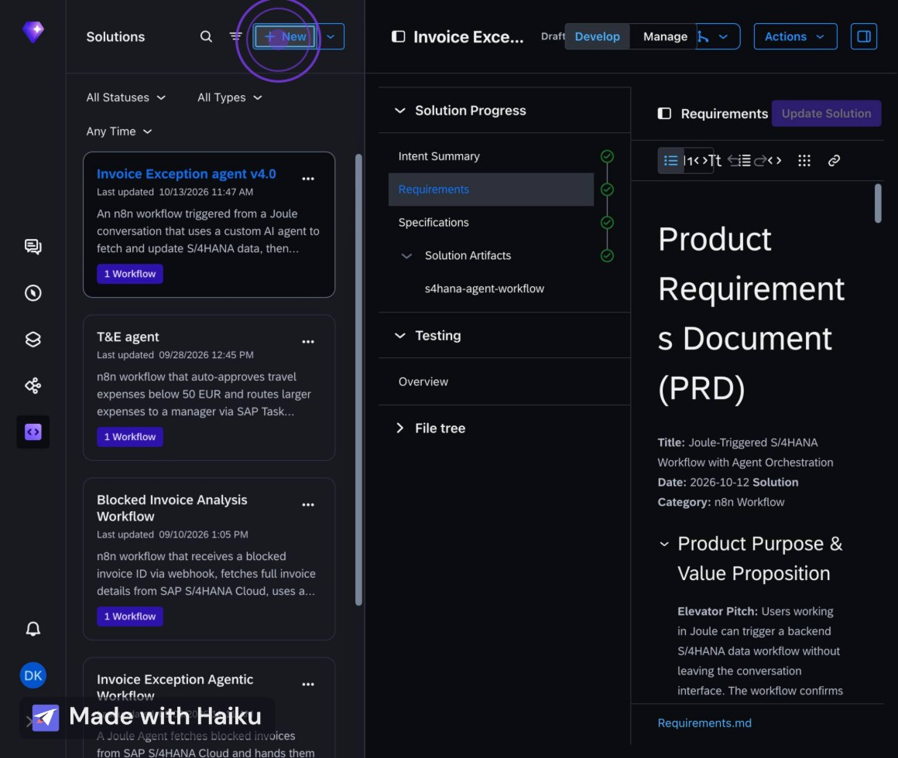
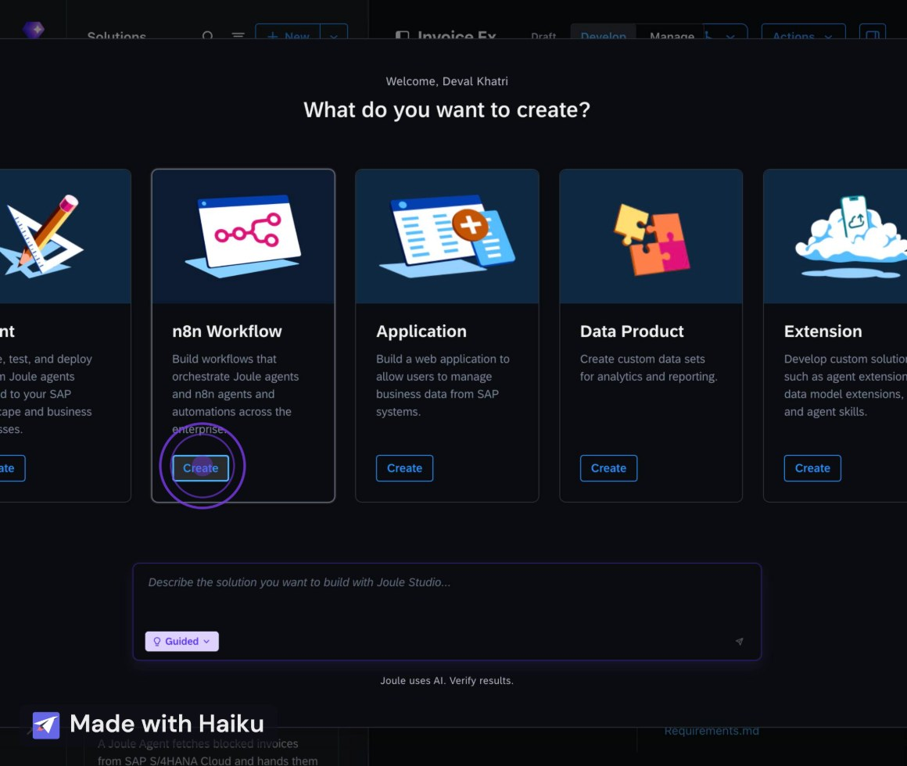
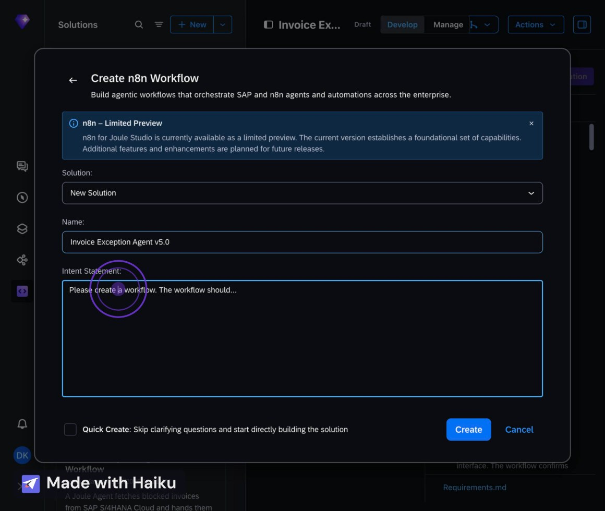
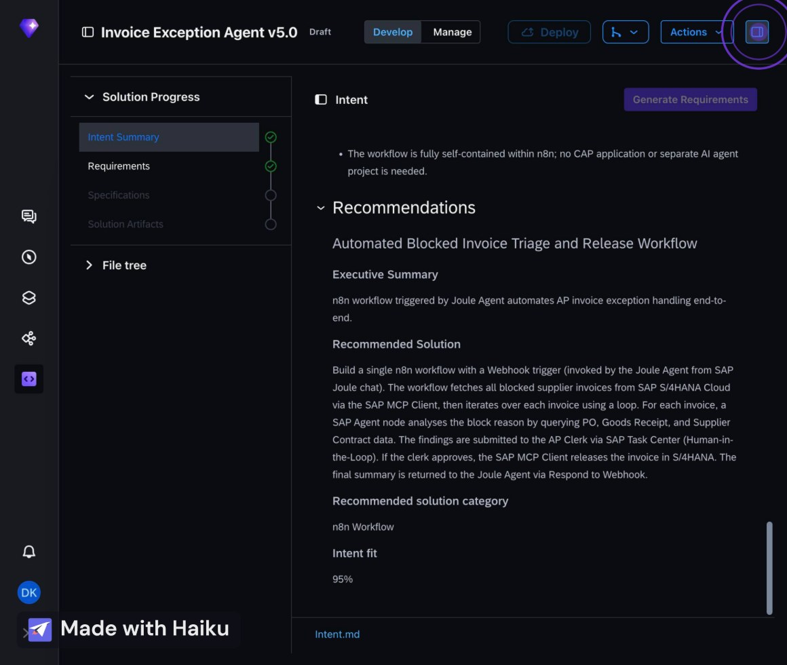
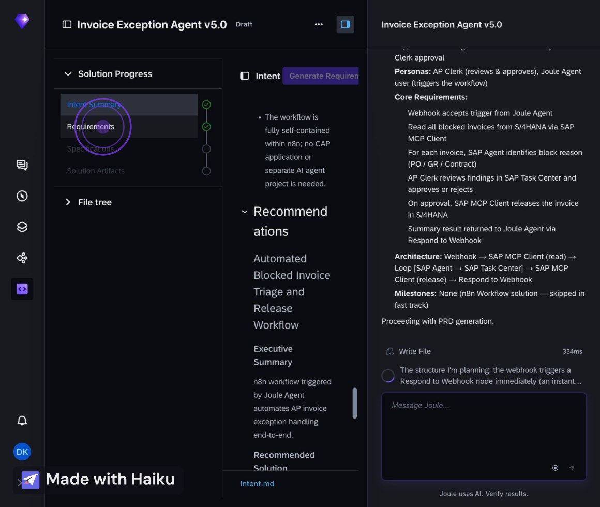
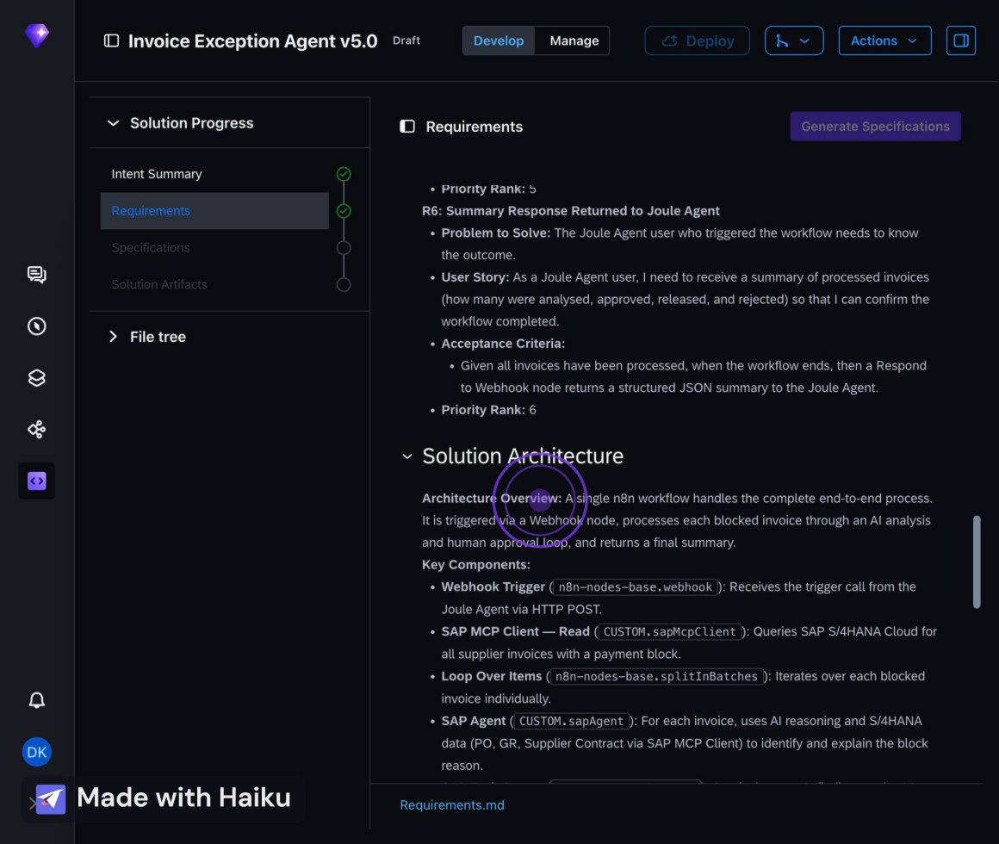
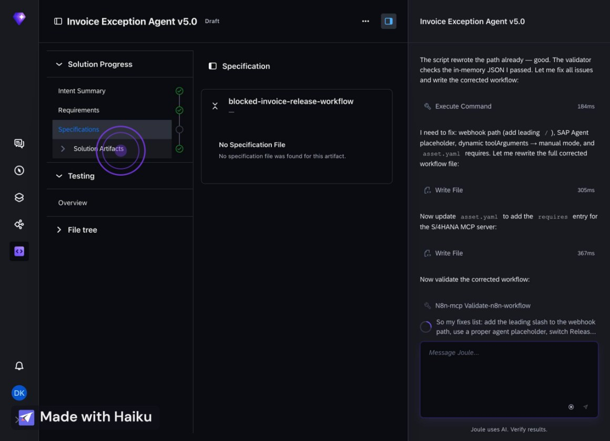
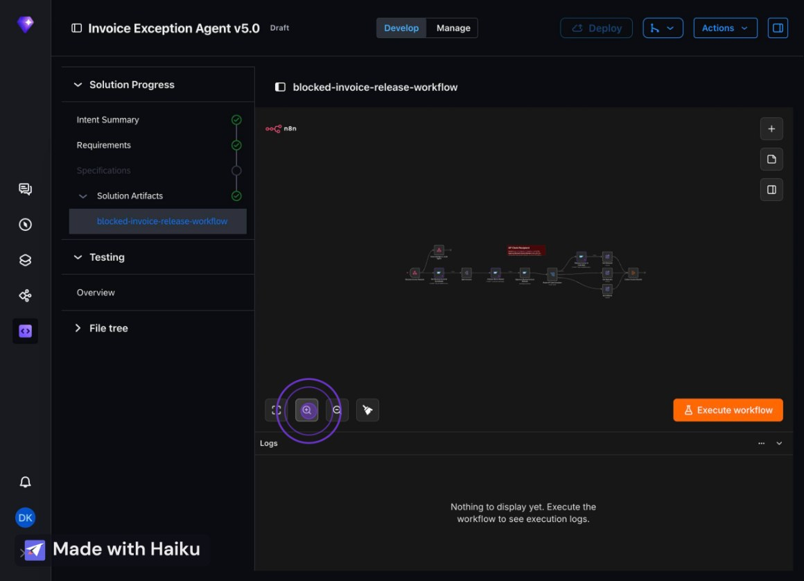

Invoice Exception Agent
Build a complete blocked-invoice release workflow from a single prompt. Joule Studio generates the n8n workflow for you — you review, approve, configure, and test.
“Create an n8n workflow with a webhook trigger, triggered by a Joule Agent from SAP Joule chat. The workflow reads all blocked supplier invoices from SAP S/4HANA Cloud using the SAP MCP Client, analyses each invoice using a SAP Agent to identify the block reason across Purchase Order, Goods Receipt, and Supplier Contract, presents the agent’s findings to the AP Clerk in SAP Task Center using SAP Human-in-the-Loop, and — if the AP Clerk approves — releases the invoice in S/4HANA Cloud via the SAP MCP Client.”
Open Joule Studio, create a new n8n Workflow solution, and enter the workflow name and prompt.
Steps
Open Joule Studio Int on Chrome
Navigate to https://0210824905.eu12.sapdas.cloud.sap/new/build

Click “New” button to create a new Solution

Find n8n Workflow and Click “Create”

Click in “Workflow name” input field

Type “Invoice Exception Agent”

Click in the “text area” field
Type (or paste) the full workflow prompt
Create an n8n workflow with a webhook trigger, triggered by a Joule Agent from SAP Joule chat. The workflow reads all blocked supplier invoices from SAP S/4HANA Cloud using the SAP MCP Client, analyses each invoice using a SAP Agent to identify the block reason across Purchase Order, Goods Receipt, and Supplier Contract, presents the agent's findings to the AP Clerk in SAP Task Center using SAP Human-in-the-Loop, and — if the AP Clerk approves — releases the invoice in S/4HANA Cloud via the SAP MCP Client.
Click “Quick Create”

Click “Create”

Joule Studio analyses your prompt and produces an Intent Summary, Process Hierarchy, and Recommended Solution. Review each one before proceeding.
Steps
Click “Intent Summary”

Minimize the chat by clicking the icon

Click “Process Hierarchy” and review

Click “Recommended Solution” and review

Open the chat again by clicking the icon

Wait for PRD generation then review each of the six requirements Joule Studio has derived from your prompt.
Steps
See the status “Proceeding with PRD generation.”

Click “Requirements” once it generates and the green tick appears

Review Must-Have Requirements and other sections of PRD
Joule Studio generates requirements dynamically. Click through the Must-Have Requirements and any other sections that appear.

Review the generated solution architecture, answer the placeholder question in the chat, then wait for the full solution to be generated.
Steps
Review the Solution Architecture — “Architecture Overview”

Click “Show Conversation” button

Reply to Joule Studio questions and let it generate the solution
Joule Studio may ask clarifying questions in the chat. Answer them in the best way that fits your scenario — there is no single correct answer. Once you reply, Joule Studio will proceed to generate the full solution automatically.

Wait for generation of Specification and Solution
Wait until the green tick appears next to the Solution artifact.
Click “Solution Artifacts”

Review the generated n8n workflow and explore how the nodes are connected.
Steps
Click on the workflow artifact
Click “Hide Conversation” button

Click “Zoom In” a few times until you are comfortable with the size

How the workflow components work together
The SAP MCP Client retrieves blocked supplier invoices from SAP S/4HANA Cloud.
The workflow retrieves the corresponding purchase orders, goods receipts, and supplier contracts.
An embedded AI Agent node analyzes potential discrepancies and identifies likely block reasons.
SAP Human-in-the-Loop routes the findings to an AP clerk for review and approval.
Based on the approval outcome, the workflow is designed to release approved invoices or handle rejected requests.
You can continue exploring the scenario by configuring the AI Agent, locally testing it, and deploying.
Explore the 7 Sample Scenarios to continue building with Joule Studio n8n workflows.